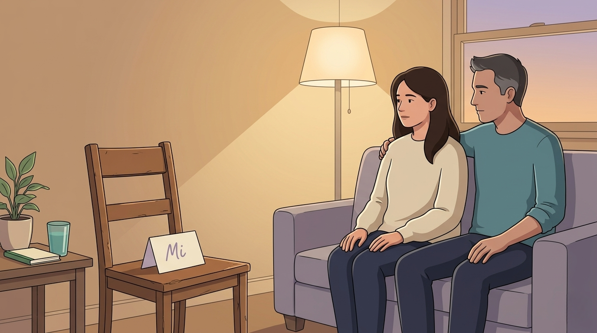
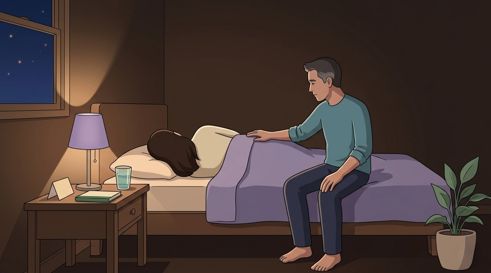

By Rustam Iuldashov
30 years lived experience with chronic migraine | Sources: 24 peer-reviewed references including Mayo Clinic Proceedings CaMEO Study (4,022 dyads), PAIN Reports systematic review (2025), Family Process, PLOS One fMRI study | Last updated: May 22, 2026
Medical Review: This content is based on peer-reviewed research from Mayo Clinic Proceedings, PAIN Reports, PLOS One, Family Process, Clinical Psychology Review, Frontiers in Pain Research, Health Psychology, Journal of Behavioral Medicine, and foundational texts by White & Epston (1990) and Figley (1995). Rustam Iuldashov is not a medical professional. Always consult a qualified healthcare provider for health-related decisions.
📋 Key Takeaways
- Nearly half (43.9%) of people with chronic migraine feel their partner doesn’t believe the severity of their headaches — a documented pattern, not a personal failure. [1]
- Empathy habituation is biological: fMRI scans show empathy circuits literally adapt to repeated exposure to a loved one’s pain. Your partner is not heartless; their nervous system is protecting itself. [2]
- Pain invalidation causes measurable physiological and emotional harm; brief partner validation training has reduced negative affect in chronic-pain patients within a single session. [14]
- Narrative therapy’s core move — externalizing the illness as a third presence rather than treating it as part of your identity — shifts couples from adversaries to teammates. [10][12]
- Three practical steps to rebuild: name the third presence together, schedule a weekly fifteen-minute conversation on good days, and keep migraine-days separate from relationship-days.
The Number Nobody Wants to Hear
The first time you canceled a dinner because the candles felt like nails, they cupped your face and told you to lie down. The hundredth time, they sighed. The two-hundredth time, they stopped asking how you were feeling.
Something shifted in the room, and neither of you knows when.
Researchers do. In the largest study ever conducted on the family impact of migraine, more than 4,000 couples were asked a quiet, brutal question: does the well partner believe the severity of their partner’s headaches? Among people with chronic migraine, 43.9% said no — their spouse did not believe how bad it really was. [1] Among those with frequent episodic migraine, the figure was 40.4%. This is not an early-relationship problem. This is what years do.
Nobody warns you about this part.
The person who stopped asking how your head feels is not worse than the one who brought tea. They are a tired person whose nervous system has begun to protect itself.
What Your Brain — and Theirs — Has Been Quietly Doing
Empathy has a half-life.
In 2015, researchers placed 62 people inside an fMRI scanner and showed them images of hands in pain, again and again. The empathy circuits — the anterior insula and the midcingulate cortex — lit up at first. Then the lights dimmed. With each trial, the response faded. [2] The brain habituates to other people’s pain. This is not a moral failure. It is a biological feature, a system designed to keep us from being incinerated by every stranger’s suffering.
The researchers noted, in a single sentence buried near the end, that this mechanism applies “to being the partner of someone with chronic pain.” [2] They were describing your husband. Your mother. Your closest friend.
In 1995, the trauma researcher Charles Figley gave the pattern a name: compassion fatigue. The emotional exhaustion that comes from sustained empathic engagement with a suffering person you cannot rescue. [3] He found it first in therapists and nurses. He later found it in families. A 2022 meta-analysis of family caregivers across multiple chronic conditions confirmed that compassion fatigue runs at moderate-to-high levels — and rises with caregiving duration. [4]
The CaMEO Study, in numbers: 13,064 respondents. 4,022 migraineur–spouse dyads. 2,275 of those dyads with children. Across six domains of family burden — from missed events to financial strain to parenting guilt — the impact rose with headache frequency. The disbelief, in particular, climbed from 24.4% in low-frequency migraine to 43.9% in chronic migraine. [1]
This is the largest dataset ever collected on what migraine does to a household. And what it shows is not a flaw in your partner. It is a pattern.
The Disbelief Is Its Own Injury
Being disbelieved hurts in a way the body can measure.
A 2025 systematic review of empathy and validation in chronic-pain couples reached a finding that should be printed on hospital walls. Across study after study, partner validation predicted lower pain interference, better mood, and stronger relationships. Invalidation — the sighs, the eye-rolls, the unspoken accusation of exaggeration — predicted the opposite. [5]
Pain scientists call it pain invalidation. It elevates cortisol, worsens psychological adjustment, and drives many patients to stop describing their pain to anyone. [6] A 2025 study in Japan tracked how repeated dismissal led patients to withdraw from telling their stories entirely. The authors named the phenomenon testimonial injustice. [7]
So you stop telling. They stop asking. The conversation that once held you both upright collapses inward — and the migraine, which is the actual enemy here, sits in the silence between you, taking up more and more of the room.
Inside a marriage, this looks like a slow ballet of concealment. A 2007 study of cancer-survivor couples documented protective buffering: the patient hides their suffering to spare the partner; the partner conceals their exhaustion to spare the patient. Both report rising distress. Their emotional rhythms desynchronize. Intimacy thins. [8] A study of post-heart-attack couples found that the more a patient buffered at four weeks, the more distressed they were at six months. [9] Concealment, even kind concealment, makes everything worse.
⚠️ When the Weight Is Too Heavy to Carry Alone
The patterns described in this article — compassion fatigue, protective buffering, emotional desynchrony — can be navigated, but not always alone. Please reach out to a qualified mental-health professional, couples therapist, or your headache specialist if any of the following are present in your relationship:
- Persistent depression, hopelessness, or thoughts of self-harm in either partner
- Verbal abuse, contempt, or emotional cruelty around your illness
- Total breakdown of communication lasting weeks or months
- Substance use rising to cope with the relationship or the pain
- A sense that the relationship itself has become unsafe
Migraine is heavy. So is loving someone who has it. Neither of you should be expected to do this without support. If you are in crisis, contact your local emergency services or a crisis line in your country. In the US, dial or text 988.
The Story You Have Both Stopped Telling
This is where narrative therapy walks into the room.
In 1990, Michael White and David Epston published an idea that has since reshaped how clinicians work with families: the person is not the problem. The problem is the problem. [10] The grammatical shift is small. The consequences are not.
When migraine moves into a relationship, the language quietly mutates. “She’s having a migraine” becomes “she’s like this.” “He needs to lie down” becomes “he always does this.” Illness fuses with identity. White called this a problem-saturated story — a narrative so dominated by the difficulty that the rest of who you are becomes invisible. Your partner stops seeing the version of you who once made them laugh at 2 a.m. in the kitchen. They see a person who cancels.
A 2013 family-therapy paper described what happens next as asymmetric acknowledgment: each partner experiencing a loss of self and a loss of the other, but rarely at the same time, rarely in the same words. [11] The grief becomes parallel instead of shared.

Externalization: Putting the Migraine in the Third Chair
Stop fighting each other. Start, together, fighting the problem.
In 2021, the psychologist Michael Rohrbaugh published a narrative intervention for couples facing chronic illness, organized around eight sequential modules. One module is titled, plainly: “Illness as External Invader.” [12] The therapist asks the couple to give the illness a name, a shape, a set of tactics. The two of them sit shoulder-to-shoulder and describe what the third presence in the room has been doing to their lives. They stop being adversaries across a kitchen table. They become teammates against something that is not either of them.
This is not metaphor dressed up as therapy. A 2025 meta-analytical actor–partner interdependence model found that couples who frame illness as “ours” — a shared opponent — report substantially higher relationship satisfaction than those who experience it as “yours” or “mine.” [13] The grammar of the problem changes the structure of the marriage.
Migraine offers an unusual gift here. The illness already feels like a separate entity — it arrives, it leaves, it has a personality. Naming it out loud, together, is often the first step out of a story that has been telling itself for years.
The 20-Minute Experiment That Changed Everything
In 2015, researchers in Sweden ran a small, audacious study. They took partners of people with chronic pain and gave them one brief training session in validation — without telling the patients. Then they watched what happened. The partners’ validating responses rose. Their invalidating responses fell. Their partners’ negative affect dropped within the same session. [14]
One conversation. Measurably less suffering.
Validation does not cure pain. It does something more specific. Being believed is its own medicine, and being disbelieved is its own injury. A 2022 framework paper in Frontiers in Pain Research proposed that validation activates social-support pathways that down-regulate the stress response and may, over time, soften the central sensitization that keeps chronic pain humming. [15]
30 years, and what I know
I’ve lived with migraine for 30 years. I know the look on someone’s face when they have stopped believing. I also know what happens when you give the illness a name and put it on the third chair. The room changes. The argument stops being about whether the pain is real and starts being about what the two of you are going to do about it.
The story we tell about the illness is, eventually, the story we tell about ourselves. Choosing the words is not a small thing.
Three Small Moves That Change the Story
If the version of you that once made them laugh has gone quiet, three moves drawn from narrative therapy and dyadic-coping research can begin to bring it back.
Move One — Name the Third Presence
Sit down together when you are both well. Give the migraine a name — Mi, the Storm, the Invader, the Houseguest Who Won’t Leave. Describe what it does. Describe what you have done together to outsmart it. This is the externalizing conversation White and Epston spent decades teaching, and the evidence base behind it now spans 43 studies and a moderate-to-large effect size on interpersonal functioning. [16]
Move Two — Schedule the Conversation You Have Stopped Having
Once a week, fifteen minutes, on a good day. Not logistics. What each of you has been carrying. Protective buffering thrives in silence; communal coping requires words. [17] If the words are hard, write them. A letter is a conversation that doesn’t require eye contact, and that is sometimes exactly what is needed.
Move Three — Distinguish the Migraine-Day from the Relationship-Day
On a bad day, do not negotiate the marriage. On a good day, do not negotiate the migraine. Couples who collapse these two timelines into one argue about the wrong thing. Couples who keep them separate often discover that the marriage has been more durable than the noise suggested. [13]
None of these moves is fast. None of them requires permission from a clinician. All of them require words that you have stopped using, said in rooms that have grown quiet.

The Chapter You Haven’t Written Yet
Narrative therapists call them unique outcomes — the moments that contradict the dominant story. The night they sat next to you in the dark and said nothing, and the nothing was enough. The morning you woke up clear-headed and made them coffee. The text on a bad afternoon that said only I’m here. These moments exist in every long relationship with chronic illness. They are not anomalies. They are the seeds of a different ending.
The 43.9% statistic is real. So is the brain habituating, and the compassion thinning, and the silence growing. But the same research that documented all of that also documented this: when couples find a language for the third presence in the room — when they let the migraine be the migraine and the marriage be the marriage — the empathy does not stay broken. It re-routes.
You did not lose them. You both got tired.
The story is not over.
📋 Key Takeaways
- Nearly half (43.9%) of people with chronic migraine feel their partner doesn’t believe the severity of their headaches — a documented pattern, not a personal failure. [1]
- Empathy habituation is biological: fMRI scans show empathy circuits literally adapt to repeated exposure to a loved one’s pain. Your partner is not heartless; their nervous system is protecting itself. [2]
- Pain invalidation causes measurable physiological and emotional harm; brief partner validation training has reduced negative affect in chronic-pain patients within a single session. [14]
- Narrative therapy’s core move — externalizing the illness as a third presence rather than treating it as part of your identity — shifts couples from adversaries to teammates. [10][12]
- Three practical steps to rebuild: name the third presence together, schedule a weekly fifteen-minute conversation on good days, and keep migraine-days separate from relationship-days.
⚕️ Important Medical Disclaimer
This article is for informational and educational purposes only and does not constitute medical advice, diagnosis, or treatment. The author, Rustam Iuldashov, is not a licensed physician, neurologist, psychotherapist, or couples therapist. He is a patient advocate with 30 years of personal experience living with chronic migraine.
All clinical claims in this article are sourced from peer-reviewed research published in indexed medical journals. Study designs and sample sizes are noted in the references below.
Compassion fatigue, protective buffering, and partner invalidation are recognized psychological phenomena, but every relationship and every chronic-illness journey is unique. Narrative therapy, externalization, and dyadic coping are evidence-based frameworks — they are not substitutes for professional psychological care. If you or your partner is experiencing depression, anxiety, suicidal thoughts, or sustained relationship distress, please seek support from a licensed clinician with experience in chronic pain and couples work. If you are in crisis, contact a crisis helpline in your country.
Always consult a qualified healthcare provider for questions about your individual health or your partner’s wellbeing. This content was last reviewed for accuracy on May 22, 2026.
References
- Buse DC, Scher AI, Dodick DW, Reed ML, Fanning KM, Manack Adams A, Lipton RB. “Impact of Migraine on the Family: Perspectives of People With Migraine and Their Spouse/Domestic Partner in the CaMEO Study.” Mayo Clinic Proceedings, 91(5):596–611 (2016). doi:10.1016/j.mayocp.2016.02.013. Study design: Longitudinal web-based cross-sectional. n=13,064 (4,022 migraineur–spouse dyads).
- Preis MA, Schmidt-Samoa C, Dechent P, Kroener-Herwig B. “The effects of prior pain experience on neural correlates of empathy for pain: An fMRI study.” PLOS ONE, 10(8):e0137056 (2015). doi:10.1371/journal.pone.0137056. Study design: Experimental fMRI. n=62.
- Figley CR. Compassion Fatigue: Coping with Secondary Traumatic Stress Disorder in Those Who Treat the Traumatized. New York: Brunner/Mazel (1995). ISBN: 978-0-87630-759-1. Foundational theoretical text.
- Liao X, Wang J, Zhang F, Luo Z, Zeng Y, Wang G. “The levels and related factors of compassion fatigue and compassion satisfaction among family caregivers: A systematic review and meta-analysis of observational studies.” Geriatric Nursing, 45:1–8 (2022). doi:10.1016/j.gerinurse.2022.02.016. Study design: Systematic review and meta-analysis.
- Teichmüller K, Galstyan H, Bas LM, Kindl G, Kanske P, Rittner HL, Reiter AMF. “Empathy and validation in chronic pain couples: a systematic review.” PAIN Reports, 10(5):e1343 (2025). doi:10.1097/PR9.0000000000001343. Study design: Systematic review.
- Nicola M, Correia H, Ditchburn G, Drummond P. “Defining pain-validation: The importance of validation in reducing the stresses of chronic pain.” Frontiers in Pain Research, 3:884335 (2022). doi:10.3389/fpain.2022.884335. Study design: Conceptual review.
- Suzuki T, Tanaka M. “Listening to the silence of pain narratives: A qualitative study of epistemic injustice in patient–clinician communication on medically unexplained chronic pain in Japan.” Social Science & Medicine (2025). doi:10.1016/j.socscimed.2025.118507. Study design: Qualitative narrative analysis. n=16.
- Langer SL, Brown JD, Syrjala KL. “Protective Buffering and Emotional Desynchrony Among Spousal Caregivers of Cancer Patients.” Health Psychology, 26(5):635–643 (2007). doi:10.1037/0278-6133.26.5.635. Study design: Observational repeated-measures with videotaped interaction. n=42 dyads.
- Suls J, Green P, Rose G, Lounsbury P, Gordon E. “Hiding Worries from One’s Spouse: Associations Between Coping via Protective Buffering and Distress in Male Post-Myocardial Infarction Patients and Their Wives.” Journal of Behavioral Medicine, 20(4):333–349 (1997). doi:10.1023/A:1025513029605. Study design: Prospective cohort. n=43 dyads.
- White M, Epston D. Narrative Means to Therapeutic Ends. New York: W.W. Norton & Company (1990). ISBN: 978-0-393-70098-8. Foundational clinical text on externalizing conversations.
- Weingarten K. “The ‘cruel radiance of what is’: Helping couples live with chronic illness.” Family Process, 52(1):83–101 (2013). doi:10.1111/famp.12017. Study design: Clinical theoretical review.
- Rohrbaugh MJ, Shoham V, Coyne JC. “Constructing We-ness: A Communal Coping Intervention for Couples Facing Chronic Illness.” Family Process, 60(1):17–31 (2021). doi:10.1111/famp.12595. Study design: Clinical intervention protocol description.
- Yang J, Zheng Y, Gou X, Zhang J. “Dyadic coping and relationship satisfaction among couples with a chronic illness: A meta-analytical actor–partner interdependence model.” Clinical Psychology Review (2025). doi:10.1016/j.cpr.2025.102593. Study design: Meta-analytical actor–partner interdependence model.
- Edlund SM, Carlsson ML, Linton SJ, Fruzzetti AE, Tillfors M. “I see you’re in pain — The effects of partner validation on emotions in people with chronic pain.” Scandinavian Journal of Pain, 6(1):16–21 (2015). doi:10.1016/j.sjpain.2014.07.003. Study design: Within-groups intervention trial. n=20 couples.
- Nicola M, Correia H, Ditchburn G, Drummond P. “Defining pain-validation: The importance of validation in reducing the stresses of chronic pain.” Frontiers in Pain Research, 3:884335 (2022). doi:10.3389/fpain.2022.884335. Study design: Theoretical framework paper.
- Vromans LP, Schweitzer RD. “Narrative therapy for adults with major depressive disorder: improved symptom and interpersonal outcomes.” Psychotherapy Research, 21(1):4–15 (2011). doi:10.1080/10503301003591792. Study design: RCT. n=47.
- Helgeson VS, Jakubiak B, Van Vleet M, Zajdel M. “Communal Coping in Couples With Health Problems.” Frontiers in Psychology, 9:1168 (2018). doi:10.3389/fpsyg.2018.01168. Study design: Conceptual and empirical review.
- Lipton RB, Bigal ME, Kolodner K, Stewart WF, Liberman JN, Steiner TJ. “The family impact of migraine: population-based studies in the USA and UK.” Cephalalgia, 23(6):429–440 (2003). doi:10.1046/j.1468-2982.2003.00543.x. Study design: Population-based cross-sectional. n=389 plus 100 partners.
- Buse DC, Powers SW, Gelfand AA, VanderPluym JH, Fanning KM, Reed ML, Adams AM, Lipton RB. “Adolescent Perspectives on the Burden of a Parent’s Migraine: Results from the CaMEO Study.” Headache, 58(4):512–524 (2018). doi:10.1111/head.13254. Study design: Cross-sectional. n=1,411 adolescents.
- Viana M, Sances G, Linde M, Ghiotto N, Guaschino E, Allena M, Goadsby PJ, Tassorelli C. “Evaluation of the burden of migraine on the partner’s lifestyle.” Neurología (English Edition) (2023). doi:10.1016/j.nrleng.2021.02.005. Study design: Cross-sectional survey. n=155.
- Cano A, Barterian JA, Heller JB. “Empathic and Nonempathic Interaction in Chronic Pain Couples.” Clinical Journal of Pain, 24(8):678–684 (2008). doi:10.1097/AJP.0b013e31816753d8. Study design: Observational laboratory study. n=58 couples.
- De Ruddere L, Craig KD. “Understanding stigma and chronic pain: a state-of-the-art review.” Pain, 157(8):1607–1610 (2016). doi:10.1097/j.pain.0000000000000512. Study design: Narrative review.
- Burns JW, Post KM, Smith DA, Porter LS, Buvanendran A, Fras AM, Keefe FJ. “Spouse criticism and hostility during marital interaction: Effects on pain intensity and behaviors among individuals with chronic low back pain.” Pain, 159(1):25–32 (2018). doi:10.1097/j.pain.0000000000001037. Study design: Observational laboratory study. n=105 couples.
- Hatchett G, et al. “Changing The Narrative: A Meta-Analysis of Narrative Therapy and Its Changes Since Inception.” Honors Projects, Seattle Pacific University (2024). Study design: Meta-analysis. 43 studies pooled (RCTs and quasi-experimental).

How We Create Content
- Peer-reviewed sources only. This article draws from Mayo Clinic Proceedings, PAIN Reports, PLOS One, Family Process, Clinical Psychology Review, Frontiers in Pain Research, Health Psychology, Journal of Behavioral Medicine, Cephalalgia, Headache, Pain, and foundational texts by White & Epston (1990) and Figley (1995).
- Study transparency. Study design and sample sizes noted for all clinical references.
- Source verification. All claims backed by numbered references with DOI links.
- Experience + Science. 30 years personal migraine experience combined with peer-reviewed evidence and narrative therapy frameworks (Michael White, David Epston).
- Regular updates. Articles reviewed when significant new research emerges.
- No conflicts of interest. No funding from pharmaceutical companies, couples therapy practices, mental health platforms, or supplement manufacturers.
You Did Not Lose Them. You Both Got Tired.
Migraine Companion was built on narrative therapy — the practice of separating you from the problem. Track attacks, yes. But also map the moments your partner showed up anyway. Begin re-authoring the story together.
Last reviewed: May 2026
Next scheduled review: November 2026